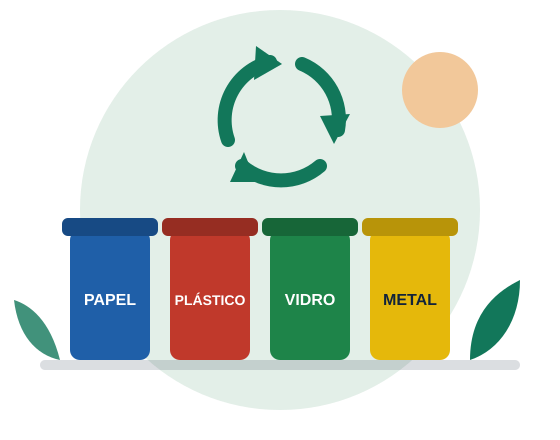

Ponto Verde no Bairro
Pontos de entrega voluntária em escolas e comércios, com coleta feita pelas cooperativas.
Saiba mais sobre o Ponto Verde no BairroODS 11 · ODS 12 · Economia solidária
Conectamos moradores, empresas e cooperativas de catadores para que o resíduo reciclável vire renda digna, e não lixo no aterro.

Catadoras e catadores de materiais recicláveis fazem um trabalho essencial para as cidades, mas muitas vezes sem reconhecimento, segurança ou renda justa. O EcoConecta nasceu para aproximar quem separa o resíduo em casa de quem transforma esse material em trabalho.
Conheça nossa história, missão e valoresDados fictícios, criados para fins acadêmicos. Veja tabelas e resultados.
Pontos de entrega voluntária em escolas e comércios, com coleta feita pelas cooperativas.
Saiba mais sobre o Ponto Verde no BairroCapacitação, equipamentos de proteção e apoio à formalização das cooperativas.
Saiba mais sobre o Catador CidadãoOficinas para crianças e jovens sobre consumo consciente e separação correta do lixo.
Saiba mais sobre o Recicla na EscolaDeixe papel, plástico, vidro e metal limpos e secos, longe do lixo orgânico.
Leve o material a um Ponto Verde ou agende a coleta com uma cooperativa.
Seja voluntário, doe equipamentos ou indique empresas parceiras.
Este site pode ser navegado pelo teclado, funciona com leitores de tela e usa textos alternativos e cores com bom contraste. Queremos que pessoas com deficiência participem da reciclagem e do nosso trabalho.
Conheça nossas medidas de acessibilidadeVinte catadoras passam a receber materiais dos Pontos Verdes da região.
Voluntários e estudantes limparam praças e separaram os recicláveis.
Professores podem solicitar oficinas gratuitas para turmas do ensino fundamental.
Fale com a nossa equipe e descubra como você, sua escola ou sua empresa podem ajudar.
Entrar em contato